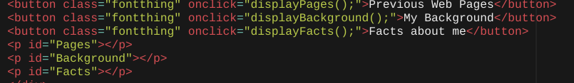
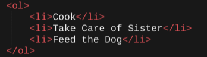
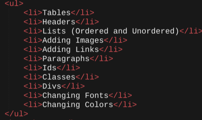
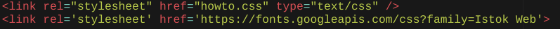
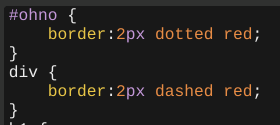
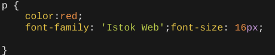

For our first two weeks in 'Intro to Programming' I successfully made a web page that talks all about me. I talked about random facts, things I like to do, activities that I do after school and things that I learned in intro to programming. My web page was created by using HTML, CSS, and Javascript.
In my web page I used HTML to make headers, add images, make lists, make buttons, link CSS and Javascript to HTML, and add id's as well as classes to make my web page. The headers are used to make the text bigger than the rest of the text. This can help section off parts of your web page or help you add titles. To add headers I used tags such as h1 and h2. In my web page I used h1 tags for my titles since they are the largest header and h2 tags for subtitles since they are a little smaller than h1 tags. Images can be help your web page look more appealing or help add to your explanations, as you will see below. To add images I used 〈img src="img adress"〉 If I wanted to format 1 image differently (like the denali logo) I added an id tag. The id tag allowed me to just change the one attribute that had the id tag instead of all the attributes. This was very helpful since I had a lot of different images, so if I didn't use the id tag and tried to change the height, width, or position it would move all the images which I did not want to happen. Making lists alllowed me to organize data or text in a neat fashion. To add lists I used ordered and unordered tags. To make ordered lists I used this tag: 〈ol〉 and to make unordered lists I used this tag: 〈ul〉. Now that I had a list in either ordered or unordered I needed to add items into the lists. To add items I used 〈li〉 nested in the ul or ol tag. Finally, in order for me to have color, alignment, and add lots of other cool and interesting things into my web page I had to link my CSS file and my Javascript file to my HTML file. To link I typed link then clicked on the snippet. After I had my layout I just had to add the name of the file I was trying to link into my HTML file.
This is how I made my headers.
This is how I added images into my web page as well as use an ID tag to change just that image.
This is how I added buttons into HTML.
This is an ordered list.
This is an unordered list.
This is how I linked CSS and Google Fonts.
After my CSS file was linked into HTML file I was able to add style, add color, change the position of text or pictures, and do lots of other things to personalize my web page. If I wanted to add background color onto my web page I went into my CSS and type body, add a curly brace { and press enter. This allowed anything within my code that had a 'body' attribute to be picked. Underneath the curly brace I would type background-color, so that it knows I'm trying to change the backgound color,any color such as red, orange, yellow, green, grey, black, etc. However I wanted to add a spefic color that was a different shade of grey, to do this I used a rgb tag then went to google and found an rgb color picker. After I found the shade and tone of grey I wanted, I went back to my code and instead of having color inside of the quotes I put rgb then parentheses. After that I could just add the 3 numbers that made up the color. (Side fact: Each number represents how much red, blue, and green were used to make the color.) In CSS if I wanted to change the position of the headers I could use the text-align function then use the attribute center, left, or right. You could also change the text by linking a style sheet to google.pis. From there you could add your favorite font from google docs and have it in your web page. I also used CSS to add borders, in my divs or tables I added a border tag and used a solid, dashed, dotted or other tag so that the border appears. You can also add a color by stating what color you want the border to be using either rgb or a regular color that is in the system such as black, green, pink, orange, and so on.
H1 at the top is what is being changed. I am changing the text so it appears in the center of the page, the color of the text is white in the header, the font style is in "Actor", and I set the width to 100%
This example is from my web page, the first border is how I made the border around the Title at the top! The second is how I made all the other div tags a different style border so it would be different from the title. I also added sizes so they wouldn't appear too big or too small.
This is how I changed my font. Since google.pis was linked I could use the font-family attribute to change the font style. I could also change the font size by adding a font-size attribute then add a value followed by px for pixels. This is how I was able to make my texts different sizes.
To add buttons into my web page I used Javascript and linked it into my HTML file just like how I linked the CSS file but instead said index.js (js being Javascript). I used a variable tag and a text tag so that it would display my text that followed. I decided I wanted the text to appear under the buttons so I used a single line breaker. Next I added a class so that I could format all my texts in the other buttons. I made a variable called ree, when ree was true the text would be displayed and when ree was false the text would not be displayed. I also used an onclick variable so that only when the button is clicked it would make ree true or false depending on how many times the button is clicked. This allowed the text to appear and disappear instead of just staying as a paragraph after a single click and not disappearing.
Using var text is the text that will be displayed, functiondisplayPages shows which paragraph I want to be displayed, lif ree is true then the paragraph will be displayed and if it is not true the paragraph will not be displayed under the button.